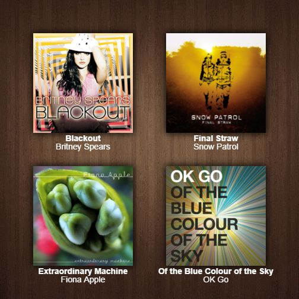

Hi, I’m Sara and I will be contributing to 333vinyl. My taste includes the foundation of indie rock central to the site in addition to special detail to female vocalists and experimental alternative rock. In the interest of saving everyone’s time, let me guide you, the reader, through four albums that I feel represent my basis and growth as a music fan.

Artist: Britney Spears
Album: Blackout
Released: 2007
First listen: 2007
Do not think I am beginning our relationship on the wrong foot, dear reader. Truly, pop music was the first cement poured into my malleable ears, and it has stuck with me since. My previous music reviews have all been for contemporary pop albums, including Spears’ 2011 album Femme Fatale. In addition, Blackout taught me not to judge an album by its artist. Publicity for the album occurred during Spears’ highly publicized personal struggles, heavily affecting sales. This did not stop me from receiving a copy from my obsessed best friend, who told me to give her a chance. The first lesson that Blackout taught me was to take risks when choosing what music to listen to and to shirk preconceptions and previous opinions.
Now that I’ve explained myself: Blackout is a good album. A damn good album, at that. You would think because the only single that truly took off was the controversial “Gimme More”, which was (and is) treated as a joke by the press, the entire album is brainless pop litter. But it’s truly the opposite: Blackout is revolutionary electro-pop that showcases techniques later adopted and brought into the mainstream by other artists. Most notable is the dubstep-influenced breakdown in “Freakshow,” a full four years before another’s appearance in her record-breaking #1 “Hold It Against Me.” Spears is referred to as the Princess of Pop for a reason—she continually works with producers who break the boundaries and with whom she makes pop history.
Artist: Snow Patrol
Album: Final Straw
Released: 2003
First listen: 2009
Eventually, I was turned on to indie rock. My first introduction to the genre was Death Cab for Cutie’s “I Will Possess Your Heart,” which lead me to pursue like-minded artists. Both Death Cab and Snow Patrol had songs on in Wicker Park, a critically-panned film with an incredible motion picture soundtrack. It was there that I discovered pre-“Chasing Cars” Snow Patrol through “How to Be Dead,” a poignant introduction to the kinds of feelings that lead vocalist and songwriter Gary Lightbody evokes. Final Straw was when I started to identify with lyrics and study the intricacies of them, which is a byproduct of my love for prose in general.
Artist: Fiona Apple
Album: Extraordinary Machine
Released: 2005
First listen: 2010
Before reaching for Extraordinary Machine, I had listened to Apple’s previous two albums, having been working through her discography. What intrigued me most about Extraordinary Machine is that two versions of it exist—a leaked bootleg produced exclusively by Jon Brion and sprinkled with strings, and the official release with completely different arrangements on all but two songs and the added “Parting Gift.” The politics behind the music industry interest me and Machine is a classic representation of the label screwing the artist. In addition, demo and bootleg recordings fascinate me on a basic level: that which we were never supposed to hear has been taken from the vaults so that we may appreciate its existence. Unreleased works thrown into the mainstream are like poetry in a way.
Artist: OK Go
Album: Of the Blue Colour of the Sky
Released: 2010
First listen: 2010
OK Go is my favorite band. It has taken me seven years of exploring music to be able to find a band that represents all that I love about music, and in 2009 I finally found them. Mostly famous for their DIY, one-take music videos, OK Go are also masters of something beautiful: doing whatever the hell they want. After reaching mainstream success with “Here It Goes Again” and much tension, they left their major label and formed their own. Blue Colour is their first independent release and exemplifies their own eclectic taste—funky psychedelics present in “In the Glass” contrast the acoustic beauty of “Last Leaf.” OK Go writes songs about regret, desire, perseverance, and, put succinctly, the essence of life. OK Go represents all that I love about music.
In all, I look forward to exploring my eclectic music taste with 333vinyl. It truly runs the gamut from I struggle for the words and then give up / My head’s up with the birds on the T-hut (“Spitting Games” – Snow Patrol) to If I got on top, you're gonna lose your mind ("Get Naked [I Got a Plan]" – Britney Spears). Follow me on Last.fm and Twitter.